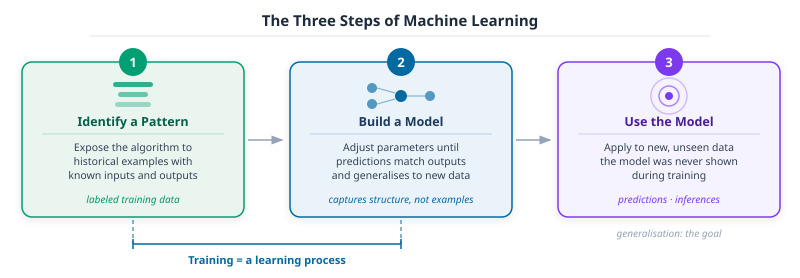
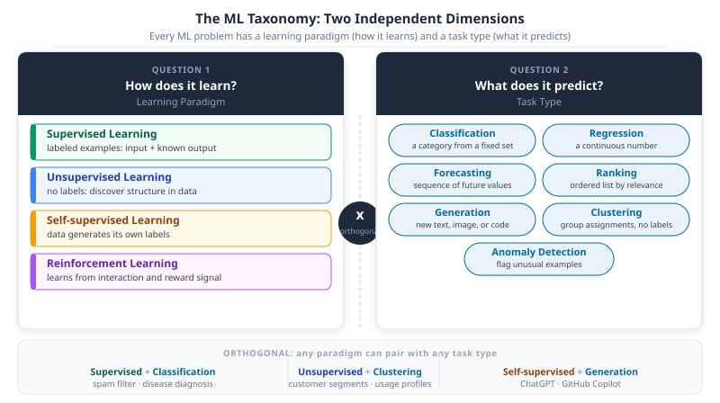

Part 23: What Is Machine Learning?

DS-MLOps ML Landscape
Python 3.12+ | Author: Anthony Faustine
You have 50,000 emails and a single question: is this one spam? You could write a rule: if the subject contains ‘FREE MONEY’, block it. Spam writers learn the rule in a day. An ML model learns the pattern from the 50,000 examples and keeps working as the pattern shifts – you retrain it, not rewrite it.
Part 22 (01-ml-introduction.qmd) placed ML in the broader AI landscape. This chapter defines exactly what machine learning is, maps the four learning paradigms and seven task types, and gives you the vocabulary to classify any new problem before writing a line of code. Part 24 (03-ml-workflow.qmd) then shows how to build a solution end to end.
What Machine Learning Is
Consider 50,000 emails, each labeled as spam or not spam. Show them to an ML algorithm and it adjusts its internal parameters until it can reliably separate the two. Show it a new email it’s never seen and it returns a judgment. No one wrote a rule that says “emails containing the words ‘free’, ‘winner’, and ‘click here’ together are probably spam.” The algorithm found that pattern on its own, from the examples.
Machine learning is a set of algorithms that automatically detect patterns in data and use those patterns to make predictions or inferences. It’s a subfield of artificial intelligence that enables computers to improve their performance on a task through experience, without being explicitly programmed for every scenario.
Any machine learning algorithm involves three steps:
- Identify a pattern from training data
- Build a model that captures the pattern and generalises to new, unseen data
- Use the model to make predictions or draw inferences

Training a model is a learning process. The algorithm is exposed to historical examples, such as thousands of emails labeled as spam or not spam, and adjusts its internal parameters until its predictions match the expected outputs as closely as possible. Parameters are the numbers a model adjusts during training: in a linear regression, the coefficients on each input feature; in a neural network, the connection weights between millions of nodes. Before training they’re initialised at random. After training, their values encode everything the model learned.
A new email arrives. The model applies what it learned and returns a judgment. Critically, the model doesn’t memorise the training examples. It extracts the underlying structure so it can make useful predictions on data it’s never seen before.
This is what distinguishes ML from a lookup table. A lookup table returns the correct answer for every case it has seen before. A trained model can answer questions about cases it’s never encountered, because it learned the pattern behind the examples, not the examples themselves.
Key Concept: Generalisation is the goal
A model that performs perfectly on training data but fails on new data is useless in practice. The goal of training isn’t to memorise examples but to generalise: to capture the underlying structure of the problem well enough to make accurate predictions on data the model was never shown. Every design decision in ML, from choosing a model family to setting regularisation, is ultimately about improving generalisation.
Common Mistake: Two confusions that follow ML beginners for years
ML is not traditional programming. A traditional program executes explicit instructions written by a human. A trained model encodes statistical patterns extracted from data. The source of the logic is different: one is written by hand, the other is learned from examples.
ML is not memorisation. A lookup table that returns the correct answer for every training example is not a model. A useful model finds the pattern behind the examples and applies it to cases it hasn’t seen before. A model that memorises its training data will fail on any new input that differs even slightly from what it was shown.
Goal: For each of the following problems, decide whether rule-based programming or machine learning is more appropriate, and explain your reasoning in one sentence.
- Calculate VAT on a purchase: 20% of the price if the item is taxable, 0% otherwise.
- Predict whether a patient will be readmitted to hospital within 30 days, given their clinical history.
- Convert a temperature from Celsius to Fahrenheit.
- Identify whether a product image contains a manufacturing defect.
- Sort a list of names alphabetically.
1. The ML Taxonomy
Not all ML problems are the same. Understanding the taxonomy means separating two questions that people regularly mix together.

The first question is: how does the model learn? This is the learning paradigm. It describes the relationship between the model and the training data: whether labels are provided, whether the model generates its own supervision, or whether it learns through interaction.
The second question is: what does the model predict? This is the task type. It describes the structure of the output: a category, a number, a ranked list, or a group assignment.
These are orthogonal. Anomaly detection, for example, can be supervised (you have labeled examples of faults) or unsupervised (you have no labels and must find outliers from structure alone). Knowing both dimensions of a problem is what lets you choose the right algorithm and the right evaluation strategy.
1.1 Learning Paradigms
Supervised learning is the most common paradigm. You provide a dataset where each example has an input (a set of features) and a known output (a label or target value). The model learns to map inputs to outputs by minimising the difference between its predictions and the known labels on the training set. A spam filter trained on emails labeled spam or not-spam is supervised learning. A model trained to predict house prices from size, location, and age is supervised learning.
Unsupervised learning works with data that has no labels. The model isn’t told what the correct output is. Instead, it discovers structure in the data on its own. Grouping customers by purchase behaviour without knowing in advance what the groups should be is unsupervised learning. Finding unusual transactions in a payment stream without pre-labeled fraud examples is also unsupervised.
Self-supervised learning sidesteps the cost of human labeling by creating supervision signals from the data itself. A language model learns to predict the next word in a sentence using the sentence as both input and label. This is how foundation models such as GPT and BERT are pre-trained on billions of text examples without any human annotation. It’s also how models learn to generate images from text descriptions. Self-supervised learning is the engine behind most modern large-scale AI systems.
Reinforcement learning is structurally different from the other three. There’s no fixed dataset. An agent interacts with an environment by taking actions and receiving rewards or penalties based on the outcomes. The agent learns a policy: a mapping from observed states to actions that maximises cumulative reward over time. AlphaGo learned to play Go this way. A system that decides when to charge or discharge a battery based on electricity prices is also a reinforcement learning problem.
![Four-panel diagram showing the four learning paradigms. Top-left green panel: Supervised Learning, showing three labeled input-output pairs feeding into a model producing a prediction. Top-right blue panel: Unsupervised Learning, showing unlabeled dots self-organising into three colour-coded clusters. Bottom-left amber panel: Self-supervised Learning, showing a sentence with a masked token and the predicted word below it. Bottom-right purple panel: Reinforcement Learning, showing an Agent and Environment connected by an action arrow going right and a reward-penalty arrow returning left.](figs/ml-paradigms.svg)
1.2 Task Types
The learning paradigm tells you how the model learns. The task type tells you what it produces. Seven task types cover most production ML problems.
| Task type | The question it answers | Quick example |
|---|---|---|
| Classification | Which category does this input belong to? | Is this transaction fraudulent? Is this email spam? |
| Regression | What number will this be? | How long will this road segment take? What is this house worth? |
| Forecasting | What sequence of values comes next? | Electricity demand over the next 24 hours; daily sales for the next 30 days |
| Ranking | Which items are most relevant to this query? | Products to show this user; search results for this query |
| Generation | What new content should be produced? | A draft reply; an image from a text description; a code completion |
| Clustering | What natural groups exist in this data? | Customer segments; household electricity usage profiles |
| Anomaly detection | Does this example deviate from the normal pattern? | Unusual meter readings; equipment behaving differently from its baseline |
The table is a quick reference. What matters more is being able to tell these types apart when you encounter a new problem. Three pairs cause the most confusion.
Classification vs anomaly detection. Classification assigns every input to one of a fixed set of known categories. To train it, you need labeled examples of every class. Anomaly detection has a different goal: it flags inputs that don’t resemble the normal pattern, without requiring labeled examples of every possible fault. The energy theft problem from Part 22 is anomaly detection, not classification. You have millions of records of normal consumption, but the patterns of tampering are too varied and too rare to enumerate as training classes. A classifier trained on “normal” and “theft” would miss any theft pattern it hadn’t seen before. An anomaly detector learns only what normal looks like and flags whatever deviates from it.
Regression vs forecasting. Both produce numbers. The difference is temporal structure. Regression predicts a single value from features that can be presented in any order: shuffle the training rows and the model is unaffected. Forecasting predicts an ordered sequence of future values where the position of each prediction matters. Shuffling training data destroys the temporal relationships that make the forecast meaningful. Predicting the travel time for a single road segment from current speed and time of day is regression – that’s the calculation Google Maps runs for every segment in the route. Predicting electricity demand hour-by-hour for the next 24 hours from the last week of readings is forecasting.
Ranking vs clustering. Both involve groups, which is why they’re confused. Ranking takes a query and an existing set of items, then orders those items by relevance to that specific query. The items don’t change: only their order changes depending on who is asking and what they want. The recommendation engine from Part 22 is ranking: it orders products by predicted enjoyment for one particular user. Clustering takes a set of items with no query and no predefined categories, and discovers groups based on similarity in the data. Grouping electricity customers by usage profile without knowing in advance how many groups there should be or what they represent is clustering. The key distinction: ranking needs a reference point (a user, a query, a goal); clustering doesn’t.
Goal: For each problem below, identify the learning paradigm and the task type.
- Given patient vital signs and lab results from the past 24 hours, predict whether the patient will need ICU transfer in the next 6 hours. You have records from 50,000 past admissions, each labeled with the outcome.
- Given 5 years of daily sales data for 500 products, predict daily sales for each product over the next 30 days.
- Given 2 years of vibration readings from industrial spindles with no fault labels, group the readings into behaviourally similar operating states.
- Given a search query and a set of candidate products, order the products by relevance to the query.
- Given historical grid prices and battery state of charge, learn a policy that maximises revenue by deciding when to buy and sell energy.
- Given a large collection of unannotated product reviews, train a model to generate concise summaries of each review.
1.3 The Model Complexity Spectrum
Choosing a learning paradigm and a task type narrows down the algorithm family. Within that family, you still face a choice along a spectrum from simple, interpretable models to complex, high-capacity ones.
| Model family | Interpretability | Capacity | Data needs | Best suited to |
|---|---|---|---|---|
| Linear and logistic regression | High | Low | Small to medium | Tabular data, regulated domains, establishing a baseline |
| Tree-based models | Medium | High | Medium | Tabular data; the most reliable family for production ML |
| Neural networks | Low | Very high | Large | Unstructured data: images, text, audio, sequences |
Linear models produce a prediction that’s a weighted sum of the input features. Their predictions can be explained by inspecting the weights, which makes them auditable and easy to debug. They work well when the relationship between features and the target is approximately linear and when interpretability is a constraint.
Tree-based models such as random forests, gradient-boosted trees (XGBoost, LightGBM), and decision trees learn non-linear decision boundaries by splitting the input space recursively. Gradient-boosted trees consistently perform best on tabular data in practice. Individual tree predictions can be explained with tools like SHAP values even when the ensemble is too large to inspect directly.
Neural networks learn hierarchical representations through stacked layers of computation. They excel when the input is unstructured: an image is a grid of pixels with no obvious feature structure; a sentence is a sequence of tokens whose meaning depends on order and context. Neural networks find structure in that raw form automatically. The cost is opacity: the relationship between inputs and outputs runs through millions of learned parameters with no simple interpretation.
Key Concept: The interpretability-capacity tradeoff
Higher capacity means the model can represent more complex patterns. Higher interpretability means humans can understand why the model makes a given prediction. These two properties generally trade off. The right position on the spectrum depends on three questions: How much data do you have? Are predictions on unstructured data required? Does the problem domain require human-auditable explanations? Defaulting to a neural network when a gradient-boosted tree would work is a common and costly mistake.
Pro Tip: Use model complexity as a diagnostic
If a linear model performs nearly as well as a gradient-boosted tree on your problem, the relationship is approximately linear and the simpler model is the right production choice. If a gradient-boosted tree performs nearly as well as a neural network on tabular data, the neural network is probably adding complexity without adding accuracy. Work up the complexity spectrum only when simpler models leave meaningful performance on the table.
2. When to Use ML
Pro Tip: Write the problem statement before choosing a model
Before opening a notebook, write one sentence that specifies: what the model predicts, using what inputs, evaluated by what metric, to achieve what business goal. “A binary classifier that predicts whether a meter reading is anomalous, using 30-day rolling consumption features, evaluated by F1 score at a 0.5 threshold, to reduce manual review effort by 60%.” This sentence forces clarity before any code is written and is the single most effective way to avoid building the wrong thing.
Machine learning is a powerful tool, but it’s not the right tool for every problem. Using ML where a simpler approach would work adds unnecessary complexity, data requirements, and maintenance overhead. Knowing when not to use ML is as important as knowing how to use it.
Use ML when
The problem requires recognising patterns too complex for hand-coded rules. If the logic that separates the two classes or produces the right prediction can’t be reasonably expressed as a decision tree written by a human expert, ML is likely the right approach. Detecting anomalies in high-dimensional sensor data, identifying disease in medical images, and forecasting energy consumption given dozens of interacting variables all fall into this category.
The system needs to adapt to changing conditions. A spam filter with hard-coded rules becomes outdated as spammer tactics evolve. A demand forecasting model retrained on recent data adapts to new consumption patterns. When the underlying distribution of the problem shifts over time, a model that can be retrained is more robust than a static rule set.
You have sufficient labeled data. Supervised learning requires examples of both the inputs and the correct outputs. The required volume depends on problem complexity: simple linear problems may work with hundreds of examples, complex classification tasks may need tens of thousands, and deep learning on unstructured data often requires millions. If you don’t have enough labeled data, consider whether a semi-supervised or transfer learning approach is feasible before abandoning ML entirely.
The scale is beyond what manual review can handle. Reviewing 100,000 meter readings per day for anomalies, processing millions of transactions for fraud, or ranking thousands of products for each user query are problems where manual review isn’t an option. ML makes automation at this scale tractable.
Do not use ML when
A simple rule or formula already works well. Calculating VAT, converting units, routing traffic based on explicit capacity limits: these problems have deterministic solutions. Using ML here adds complexity with no benefit.
You have very little data. If you have fewer examples than model parameters, the model will memorise the training set rather than generalise. Before reaching for ML, exhaust the options for data collection, augmentation, or transfer from a related domain.
Full interpretability is legally or ethically required. Some decisions, particularly in regulated domains such as credit scoring, clinical diagnosis, and criminal justice, require explanations that a regulator or affected party can audit. A neural network with millions of parameters doesn’t provide this natively. If the decision must be explainable at the level of individual features and their contributions, start with interpretable models such as logistic regression or decision trees before considering more complex alternatives.
The problem definition is unstable. If the definition of the target changes every few weeks, for instance because the business is still deciding what “at-risk customer” means, the cost of retraining and re-evaluating a model exceeds the benefit. Stabilise the problem definition first.
Goal: For each scenario, apply the decision checklist. State whether ML is the right approach and explain your reasoning. If ML is not appropriate, suggest what should be used instead.
- A logistics company wants to calculate the shortest delivery route between 10 warehouse locations. They have a list of distances and want to minimise total travel time.
- A hospital wants to predict which patients discharged today are likely to return within 30 days, using 3 years of discharge records and clinical notes from 50,000 patients.
- An energy retailer wants to identify customers on the wrong tariff plan. The tariff rules are clear: if monthly usage exceeds 500 kWh, the customer should be on the high-usage plan.
- A manufacturer wants to detect defects in circuit board solder joints using images from a production line camera, with 15,000 labeled images of good and defective joints.
3. Real-World Impact
Machine learning is already embedded in the systems that run modern organisations. Understanding real applications matters not just as motivation. It also develops judgment about which learning paradigm and task type apply to a problem you haven’t seen before.
The table below maps problem domains to the paradigm and task type that typically apply. Reading across the rows, notice that the domain never changes the technique. The same clustering algorithm that segments electricity profiles segments customers in retail. The same anomaly detection approach that flags energy theft flags fraudulent transactions in finance.
Two observations from practice are worth stating directly.
First, most high-value ML applications in industry aren’t glamorous. The majority of value comes from accurate demand forecasting, reliable anomaly detection, and well-calibrated classifiers for operational decisions. These aren’t problems that require a new algorithm. They require clean data, sound evaluation, and disciplined deployment.
Second, the barrier to impact in most organisations isn’t the model. Research shows that roughly 20% of organisations implementing AI achieve their projected outcomes (Babu et al., 2021), and the primary failures are strategic and organisational rather than technical. Data quality issues, misaligned success metrics, models that solve the wrong problem, and insufficient production infrastructure cause more failures than model accuracy does. Getting the problem definition right is more valuable than getting the model right.
Common Mistake: Starting with the algorithm
A common failure pattern is choosing a model, often a neural network because it appeared in a recent paper, before defining the problem precisely. The algorithm should be the last decision, not the first. The first decisions are: what does the model predict, using what inputs, and how will you know if it’s working? A well-defined problem with a gradient-boosted tree often outperforms a poorly defined problem with a transformer. Start with the problem, not the model.
Next: Part 24: The ML Workflow and Problem Framing builds directly on this taxonomy. Given a problem that belongs to one of these paradigms, how do you turn it into a well-specified ML task, choose the right evaluation metric, and avoid the most common failure modes before you write a line of model code.